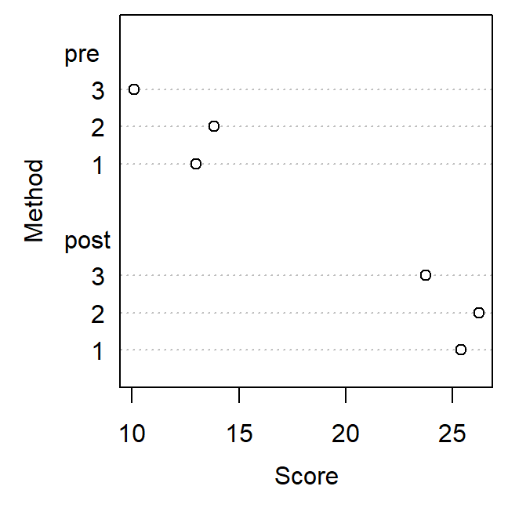
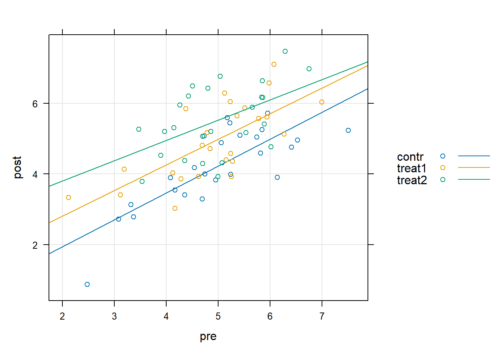

Chapter 3 Pre/post measurements
In this chapter, we start with the simplest form of longitudinal data: pre/post measurements.
3.2 Exercises
Exercise 1
Lowry (2000, Chapter 17) describes the following example
Based on values \(Y\) of a finals exam, \(m = 3\) learning methods introducing basic programming skills will be compared (\(i = 1, 2, 3\))
In each of the chosen schools, 12 students attending grade 5 have been randomly selected (\(j = 1, \dots, 12\)) for a six week course
Before the course, familiarity with computers was assessed in a pre test as covariate \(X\)
Data for method 1:
| pre | 14 | 10 | 7 | 18 | 14 | 16 | 13 | 15 | 5 | 18 | 16 | 10 |
| post | 29 | 24 | 14 | 27 | 27 | 28 | 27 | 32 | 13 | 35 | 32 | 17 |
Data for method 2:
| pre | 6 | 16 | 9 | 19 | 13 | 14 | 15 | 18 | 17 | 8 | 15 | 16 |
| post | 15 | 28 | 13 | 36 | 29 | 27 | 31 | 33 | 32 | 15 | 30 | 26 |
Data for method 3:
| pre | 15 | 9 | 7 | 12 | 12 | 9 | 12 | 3 | 13 | 10 | 11 | 8 |
| post | 32 | 27 | 15 | 23 | 26 | 17 | 25 | 14 | 29 | 22 | 30 | 25 |

Fit the following models to data
\[\begin{align} y_{ij} &= \beta_0 + \beta_1 \cdot x_{ij} + \varepsilon_{ij}\\ y_{ij} &= \beta_0 + \beta_1 \cdot x_{ij} + \beta_2 \cdot z_{i} + \varepsilon_{ij}\\ y_{ij} &= \beta_0 + \beta_1 \cdot x_{ij} + \beta_2 \cdot z_{i} + \beta_3 \cdot x_{ij} \cdot z_i + \varepsilon_{ij} \end{align}\]
Plot the data with the predictions for each model
Compare the models with a likelihood ratio test
What are the adjusted means for the ANCOVA model?
Code
## Fit models
lm1 <- lm(post ~ pre, data = dat)
lm2 <- lm(post ~ pre + method, data = dat)
lm3 <- lm(post ~ pre * method, data = dat)
## LRT
anova(lm1, lm2, lm3)
colors <- c("#78004B", "#FF6900", "#3CB4DC")
## Plot model predictions
par(mfrow = c(1, 3))
plot(post ~ pre, data = dat, col = colors[dat$method], pch = 16)
abline(lm1)
legend("topleft", paste("Method", 1:3), col = colors, pch = 16, bty = "n")
plot(post ~ pre, data = dat, col = colors[dat$method], pch = 16)
abline(coef(lm2)[1], coef(lm2)[2], col = colors[1])
abline(coef(lm2)[1] + coef(lm2)[3], coef(lm2)[2], col = colors[2])
abline(coef(lm2)[1] + coef(lm2)[4], coef(lm2)[2], col = colors[3])
legend("topleft", paste("Method", 1:3), col = colors, pch = 16, bty = "n")
plot(post ~ pre, data = dat, col = colors[dat$method], pch = 16)
abline(coef(lm3)[1], coef(lm3)[2], col = colors[1])
abline(coef(lm3)[1] + coef(lm3)[3], coef(lm3)[2] + coef(lm3)[5], col = colors[2])
abline(coef(lm3)[1] + coef(lm3)[4], coef(lm3)[2] + coef(lm3)[6], col = colors[3])
legend("topleft", paste("Method", 1:3), col = colors, pch = 16, bty = "n")Code
## Means for pre and post measurements
datagg <- aggregate(cbind(pre, post) ~ method, data = dat, FUN = mean)
## Adjusted means
datagg$post_adj <- predict(lm2,
newdata = data.frame(method = factor(1:3),
pre = mean(dat$pre)))
# Adjusted "time effects"
datagg$diff <- datagg$post - datagg$pre
datagg$diff_adj <- datagg$post_adj - mean(datagg$pre)Exercise 2
Simulate a data set for 75 subjects
Create a factor
conditionindicating a control group and two treatment groups with 25 subjects eachSimulate pre test data with \(N \sim (5, 1)\)
Simulate a post test score assuming a slope of 0.7 between pre and post score and that the first treatment group improves by 0.5 points compared to the control group and the second treatment group by 1 point
What other assumption needs to be made?
Code
set.seed(1042) # set seed for reproducibility
n <- 75
condition <- factor(rep(c("contr", "treat1", "treat2"), each = n / 3))
eff_cond <- c(1, 0.5, 1)
pre <- rnorm(n, mean = 5, sd = 1)
post <- 0.7 * pre + model.matrix( ~ condition) %*% eff_cond + rnorm(n)
dat <- data.frame(id = factor(1:n),
pre = pre,
post = post,
condition = condition
)
rm(pre, post, condition)
lattice::xyplot(post ~ pre, dat, groups = condition,
type = c("g", "p", "r"), auto.key = TRUE)
Code
# Observed averaged time effects, pre and post scores
aggregate(cbind(post - pre, pre, post) ~ condition, dat, mean)Fit three different models to the data
- A Change Score model
- An ANCOVA model
- A mixed-effects model with predictors
conditionandtime
Compare the results of the three models
What is the adjusted time effect for each group?
Code
library(lme4)
## Change Score Model
#m1 <- lm(post - pre ~ condition, dat)
m1 <- lm(post ~ condition + offset(pre), dat)
summary(m1)
## ANCOVA Model
m2 <- lm(post ~ condition + pre, dat)
summary(m2)
# Adjusted means
predict(m2, newdata = data.frame(condition = c("contr", "treat1", "treat2"),
pre = mean(dat$pre)))
## Mixed Model (equivalent to change score model)
dat_long <- reshape(dat, direction = "long",
varying = list(c("pre", "post")),
v.names = "resp",
idvar = "id",
timevar = "time",
times = c(0, 1))
m3 <- lmer(resp ~ condition * time + (1 | id), dat_long)
summary(m3)
## Compare parameters of the three models
cbind(coef(m1), coef(m2)[1:3], fixef(m3)[4:6])
datagg <- aggregate(cbind(pre, post) ~ condition, data = dat, FUN = mean)
## Adjusted means
datagg$post_adj <- predict(m2,
newdata = data.frame(condition = factor(c("contr", "treat1", "treat2")),
pre = mean(dat$pre)))
# Adjusted "time effects"
datagg$diff <- datagg$post - datagg$pre
datagg$diff_adj <- datagg$post_adj - mean(datagg$pre)
# OR
m4 <- lm(post - pre ~ condition + scale(pre), dat)
summary(m4)
# Adjusted "time effects"
predict(m4, newdata = data.frame(condition = c("contr", "treat1", "treat2"),
pre = mean(dat$pre)))Exercise 3
Hedeker & Gibbons (2006) report a smoking prevention study with students. The study used a \(2 \times 2\) factorial design with factor “prevention curriculum” (with vs. without) and “TV prevention” (with vs. without). Students were randomly assigned to one of the four groups. Students’ knowledge about tabacco induced health risks before and after the prevention have been measured.
Read the data set
television.txtinto R. Assign meaningful variable names. (You will find the necessary information at the beginning of the data file!)Calculate means and standard deviations for baseline, follow-up and change scores separately for the four groups. How many students are assigned to each group?
Plot the follow-up means. Put intervention curriculum on the \(y\) axis and two seperate lines for each tv condition. Which effects do you expect based on this plot?
Conduct an analysis for the follow-up scores (ANOVA), the change scores, the adjusted follow-up scores (ANCOVA), and the adjusted change score. Interpret the parameters for these models. How does the knowledge of the students change depending on the two factors?
Assess how well the assumptions for the ANCOVA model hold using visual methods.
Code
dat <- read.table("data/television.txt", skip = 43)
names(dat) <- c("school", "class", "curri", "tv", "pre", "post")
aggregate(cbind(pre, post, post - pre) ~ curri + tv, data = dat, FUN = mean)
aggregate(cbind(pre, post) ~ curri + tv, data = dat, FUN = sd)
aggregate(pre ~ curri + tv, data = dat, FUN = length)
interaction.plot(dat$curri, dat$tv, dat$post, type = "b", pch = c(1,16),
xlab = "Curriculum", ylab = "Mean THKS score", trace.label = "TV")Code
summary(lm1 <- lm(post ~ curri * tv, data = dat)) # Follow-Up
summary(lm2 <- lm(post - pre ~ curri * tv, data = dat)) # Change-Score
summary(lm3 <- lm(post ~ pre + curri * tv, data = dat)) # ANCOVA
summary(lm4 <- lm(post - pre ~ pre + curri * tv, data = dat)) # Change-Score ANCOVA
plot(lm3)